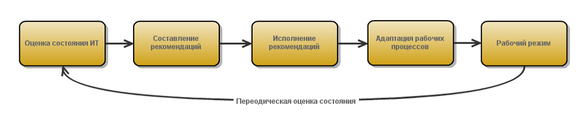

<div id="content">
	<div class="container">
		<div class="row">
			<div class="grid-3">
				<h2><span class="slash">//</span> О чем все это?</h2>
			</div>
			<div class="grid-9">
				<p>
				<strong>Что это такое?</strong> 
				- Предоставление услуг специалистов нашей компании для решения Ваших задач в области Информационных Технологий<br/>
				<strong>Зачем это нужно?</strong> 
				- Это более профессионально и менее затратно, а значит выгодно 
				(оперативное решение задач, повышение уровня отказоустойчивости)<br/>
				<strong>Сколько это стоит?</strong> 
				- Узнать уровень цен можно в <a href="#">калькуляторе</a>, точная цена обслуживания 
				может быть получена только после проведения детального анализа и оценки	состояния ИТ-инфраструктуры
				</p>
			</div>
		</div>

		<div class="row">
			<div class="grid-6">
				<h3>Ваш системный администратор работает плохо или просто не успевает?</h3>
				<ul>
					<li>Не хватает знаний и практического опыта</li>
					<li>Не умеет организовать эффективный процесс работы, все времы бегает от компьютера к компьютеру</li>
					<li>Не успевает физически делать несколько дел одновременно</li>
					<li>Нет мотивации выполнять работу качественно</li>
					<li>Не хватает времени на работу и учебу</li>
				</ul>
			</div>
			<div class="grid-6">
				<h3>Наша компания работает по другому: мы заботимся о качестве</h3>
				<ul>
					<li>95% проблем решаются по телефону</li>
					<li>Быстрое прибытие специалистов на место в случае сбоя</li>
					<li>Тотальный контроль над инфраструктурой</li>
					<li>Широкий список готовых решений для задач бизнеса</li>
					<li>Материальная заинтересованность в высоком качестве услуг</li>
					<li>Профессионализм и ответственность</li>
				</ul>
			</div>
		</div>

		<hr class="row-divider">

		<div class="row">
			<div class="grid-3">
				<h2><span class="slash">//</span> Вы получаете</h2>
			</div> <!-- /grid-3 -->
			<div class="grid-3">
				<h3>Полноценный ИТ-отдел</h3>
				<ul>
					<li>Специалист по пользовательским компьютерам</li>
					<li>Специалист по серверам</li>
					<li>Специалист по АТС</li>
					<li>Специалист по сетевому оборудованию</li>
					<li><a href="#">Полный список специалистов</a></li>
				</ul>
			</div> <!-- /grid-3 -->
			<div class="grid-3">
				<h3>Снижение затрат</h3>
				<ul>
					<li>Нет необходимости платить налоги за сотрудника в штате</li>
					<li>Есть возможность работы с НДС</li>
					<li>Не нужно организовывать рабочее место</li>
					<li><a href="#">Пример расчета</a></li>
				</ul>
			</div><!-- /grid-3 -->
			<div class="grid-3"> 
				<h3>Улучшение ИТ-инфраструктуры </h3>
				<ul>
					<li>Цель оптимизации - подстройка под бизнес-процессы клиента</li>
					<li>Применение индустриальных практик к организации инфраструктуры</li>
					<li>Большое количество готовых решений</li>
					<li><a href="#">Примеры оптимизации</a></li>
				</ul>
			</div> <!-- /grid-3 -->
		</div> <!-- row -->

		<hr class="row-divider">

		<div class="row">
			<div class="grid-3">
				<h2><span class="slash">//</span>Порядок работы</h2>
			</div><!-- /grid-3 -->
			<div class="grid-9">
				<br/>
				<ol>
					<li>Оценка состояния ИТ-инфраструктуры (<a href="#">полное описание методики проведения оценки</a>)</li>
					<li>Составление рекомендаций по приведению в оптимальное состояние всех составляющих инфраструктуры 
					согласно мировым практикам (<a href="#">пример рекомендаций по оптимизации</a>)</li>
					<li>Исполнение рекомендаций и организация взаимодействия с клиентом</li>
					<li>Адаптация рабочих процессов "под клиента"</li>
					<li>Выход на рабочий режим</li>
				</ol>
			</div> <!-- /grid-9 -->
		</div> <!-- /row -->


		<hr class="row-divider">

		<div class="row">
			<div class="grid-3">
				<h2><span class="slash">//</span>Наши преимущества</h2>
			</div>
			<div class="grid-9">
				<h3><i class=" icon-shopping-cart"></i> Подбор и поставка оборудования по низким ценам</h3>
				<p>Мы занимаемся не только продажей но и поддержкой, поэтому мы подбираем лучше варианты оборудования, так как заинтересованы в стабильной работе инфраструктуры клиента.</p>
				
				<h3><i class="icon-screenshot"></i> Полная фокусировка на Ваших проблемах</h3>
				<p>По мере роста бизнесов клиентов возникают сложные задачи, требующих бозотлагательного решения. Для этого создается мини-комманда из наших специалистов, которая разрабатывает решение, проводит тестирование и внедрение. Результаты заносятся в базу решений для дальнейшего использования.</p>
				<h3><i class="icon-thumbs-up"></i> Используем стратегию win-win</h3>
				<p>(почему нам выгодно работать хорошо)
				Клиент получает определенную фиксированную стоимость обслуживания, мы же чтобы максимизировать свою прибыль вынуждены работать хорошо, что опять же выгодно клиенту. Таким образом, такой подход выгоден и нам и клиенту.</p>


				<h3><i class="icon-eye-open"></i> Всегда ищем "корень" проблемы</h3>

				<p>Решение проблемы - всего лишь пол дела, нужно еще найти причину ее возникновения. Зная причину можно избежать проблем в будущем. Такой подход позволяет экономить время нам и клиенту (<a href="#">база знаний по проблемам</a>)</p>
				
				<h3><i class="icon-user"></i> Высокий уровень компетенции</h3>
				<p>Проблемой в какой-либо области всегда занимается специалист обладающий компетенцией в данном вопросе</p>
			</div>
		</div>

		<div class="row">
			<div class="hcenter grid-12">
				<h1>Вы получите неограниченное количество экстренных выездов при фиксированной абонентской плате</h1>
			</div>
		</div>


		<hr class="row-divider">

		<div class="row">
			<div class="grid-3">
				<h2><span class="slash">//</span> О нас говорят</h2>
				<p>Здесь приведены наиболее интересные отзывы наших клиентов, все отзывы можно посмотреть нажав на кнопку</p>
				<div class="btn btn-small">Посмотреть все отзывы</div>
			</div>
			<div class="grid-3">
				<i>"После оптимизации нашей ИТ-инфраструктуры пользователи стали более продуктивно работать. 
				Время простоя при поломках значительно уменьшилось"</i><br/>
				<b>Иванов И.С.<br/>
				Директор холдинга</b>
			</div>
			<div class="grid-3">
				<i>"После перехода на обслуживание все задачи решаюются быстро и эффективно, свой системный 
				администратор никогда не смог бы так"</i><br/>
				<b>Смирнова А.Б.<br/>
				Коммерческий директор ООО Идеко</b>
			</div>
			<div class="grid-3">
				<i>"Возникла сложная задача по организации взаимодействия пользователей из разных филиалов, 
				ребята быстро придумали решение и реализовали его, я очень доволен"</i><br/>
				<b>Петров С.В.<br/>
				Генеральный директор ОАО Метро</b>
			</div>
		</div>

		<hr class="row-divider">

		<div class="row">
			<div class="grid-5">
				<h2><span class="slash">//</span>Рекомендательные письма</h2>
				<div class="btn btn-small">посмотреть все рекомендательные письма</div>
			</div>
			<div class="grid-1"></div>
			<div class="grid-1"></div>
			<div class="grid-1"></div>
			<div class="grid-1"></div>
			<div class="grid-1"></div>
			<div class="grid-1"></div>
			<div class="grid-1"></div>
		</div>

	</div> <!-- /container -->
</div> <!-- /content -->
